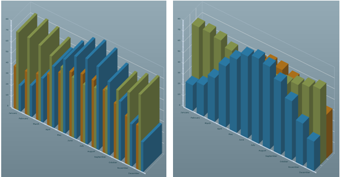
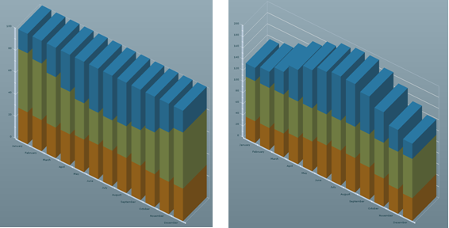
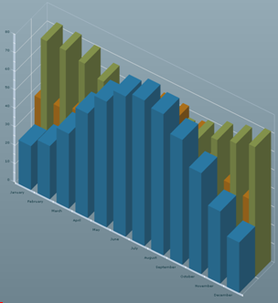
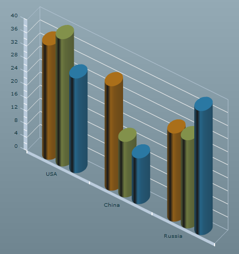

A 3D column chart contains a set of
ColumnSeries3D classes that connects to the
dataProvider of the chart. The following code shows the creation of a 3D column
chart.
<?xml version="1.0" ?>
<mx:Application xmlns:mx="http://www.adobe.com/2006/mxml"
xmlns:ilog="http://www.ilog.com/2007/ilog/flex">
<mx:Script>
<![CDATA[
import mx.collections.ArrayCollection;
[Bindable]
public var temperature:ArrayCollection = new ArrayCollection([
{Month:"January", London:39, Sydney:71.8, Beijing:23.7},
{Month:"February", London:39.6, Sydney:71.8, Beijing:28.8},
{Month:"March", London:42.3, Sydney:69.8, Beijing:40.5},
{Month:"April", London:47.3, Sydney:65.1, Beijing:56.5},
{Month:"May", London:53.4, Sydney:59.5, Beijing:68},
{Month:"June", London:59.4, Sydney:55.2, Beijing:75.9},
{Month:"July", London:62.6, Sydney:53.6, Beijing:78.8},
{Month:"August", London:61.9, Sydney:55.8, Beijing:76.5},
{Month:"September", London:57.6, Sydney:59.5, Beijing:67.6},
{Month:"October", London:50.5, Sydney:63.9, Beijing:54.7},
{Month:"November", London:43.9, Sydney:67.1, Beijing:39},
{Month:"December", London:40.6, Sydney:70.2, Beijing:27.3}]);
]]>
</mx:Script>
<ilog:ColumnChart3D width="100%" height="100%"
dataProvider="{temperature}" showDataTips="true">
<ilog:horizontalAxis>
<mx:CategoryAxis categoryField="Month"/>
</ilog:horizontalAxis>
<ilog:series>
<ilog:ColumnSeries3D yField="London" displayName="London" />
<ilog:ColumnSeries3D yField="Sydney" displayName="Sydney" />
<ilog:ColumnSeries3D yField="Beijing" displayName="Beijing" />
</ilog:series>
</ilog:ColumnChart3D>
</mx:Application>
The
ColumnChart3D class has
a
type property
that can be used to choose between several types of column arrangement.
The following figures show the column chart coded above rendered with
different
type values. This shows how the
type property affects the rendering.
Example 1
Type values: type="clustered" (default value) and type="overlaid"

Example 2
Type values: type="100%" and type="stacked"

Complex charts
You can mix the four rendering styles to create more
complex charts by using a
ColumnSet3D object
that groups columns in a similar way to how the
Adobe®
Flex®
2D
ColumnSet object works on Adobe Flex 2D charts.
For example, the following code shows how to mix the clustered and overlaid types.
<ilog:ColumnChart3D width="100%" height="100%"
dataProvider="{temperature}" showDataTips="true" type="overlaid">
<ilog:horizontalAxis>
<mx:CategoryAxis categoryField="Month"/>
</ilog:horizontalAxis>
<ilog:series>
<ilog:ColumnSet3D type="clustered">
<ilog:ColumnSeries3D yField="London" displayName="London"/>
<ilog:ColumnSeries3D yField="Sydney" displayName="Sydney"/>
</ilog:ColumnSet3D>
<ilog:ColumnSeries3D yField="Beijing" displayName="Beijing"/>
</ilog:series>
</ilog:ColumnChart3D>
The following figure shows how a 3D chart that mixes clustered and overlaid types
is rendered.

The
minField property of a
ColumnSeries3D class allows you to specify the field that is used to compute the
minimum vertical value for the column. Instead of being drawn from
the horizontal axis to the
y value, it
is drawn from the
minField value to the
y value.
Cylinder representation
To switch from the default cuboid representation of the
column to a cylinder representation, use the
form attribute of the
ColumnSeries3D class.
The following example in MXML shows the use of the form attribute in a column chart.
<mx:Application xmlns:mx="http://www.adobe.com/2006/mxml"
xmlns:ilog="http://www.ilog.com/2007/ilog/flex">
<mx:Script>
<![CDATA[
import mx.collections.ArrayCollection;
[Bindable]
private var medalsAC:ArrayCollection = new ArrayCollection( [
{ Country: "USA", Gold: 35, Silver:39, Bronze: 29 },
{ Country: "China", Gold: 32, Silver:17, Bronze: 14 },
{ Country: "Russia", Gold: 27, Silver:27, Bronze: 38 } ]);
]]>
</mx:Script>
<ilog:ColumnChart3D width="100%" height="100%" depth="10"
showDataTips="true" dataProvider="{medalsAC}">
<ilog:horizontalAxis>
<mx:CategoryAxis categoryField="Country"/>
</ilog:horizontalAxis>
<ilog:series>
<ilog:ColumnSeries3D xField="Country" yField="Gold" displayName="Gold"
form="cylinder"/>
<ilog:ColumnSeries3D xField="Country" yField="Silver" displayName="Silver"
form="cylinder"/>
<ilog:ColumnSeries3D xField="Country" yField="Bronze" displayName="Bronze"
form="cylinder"/>
</ilog:series>
</ilog:ColumnChart3D>
</mx:Application>
This MXML example of cylinder representation for a column
chart renders as shown in the following figure.
